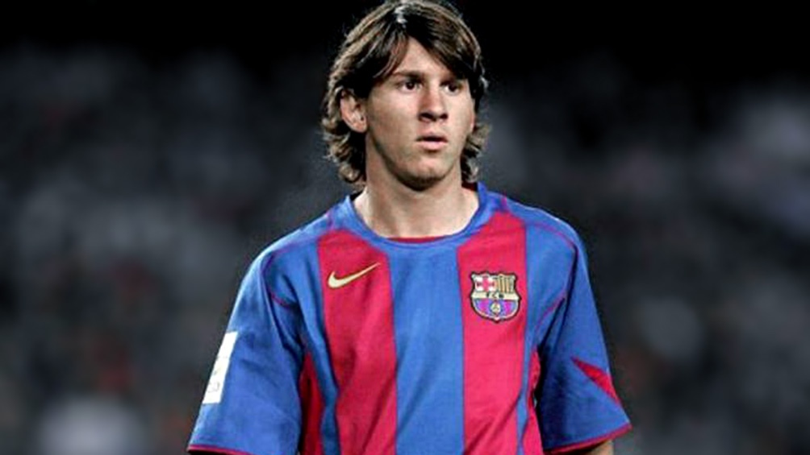
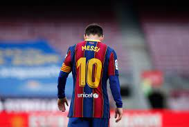
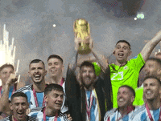

Lionel Messi is a football player from Argentina who plays for FC Barcelona. He has won the Ballon D'Or, the annual award given to the best player in the world, 7 times, 2022 FIFA World Cup winner and an Olympic gold medal winner in 2008. He was born in 1987 in Rosario, Argentina's third-biggest city.


Born and raised in the city of Rosario, at the age of 13 he settled in Spain, where Barcelona agreed to pay for the treatment of the hormonal disease that he had been diagnosed with as a child.
After a fast progression through the Barcelona Youth Academy, he made his official first-team debut in October 2004, aged seventeen.
On June 30 his contract expired, Messi became a free agent, but negotiations to continue at Barcelona were underway.404 On July 14, and although some details of the contract still needed to be adjusted, it emerged that he would sign for five more years and the salary would be cut in half. On August 7, however, and despite the fact that La Liga had approved the new contract, Laporta informed Jorge Messi that, due to budget reasons, he could not renew the player. On August 5, 2021, Barcelona announced that he could not keep Messi, since doing so implied exceeding the limit of expenses foreseen by La Liga. Messi left the club with thirty-five titles won
after 28 years of no titles for Argentina, Messi in 2 years won all of them, the "Copa america" (2021), "Finalissima"(2022), "World cup"(2022).
messi goat
Copyright © totardium